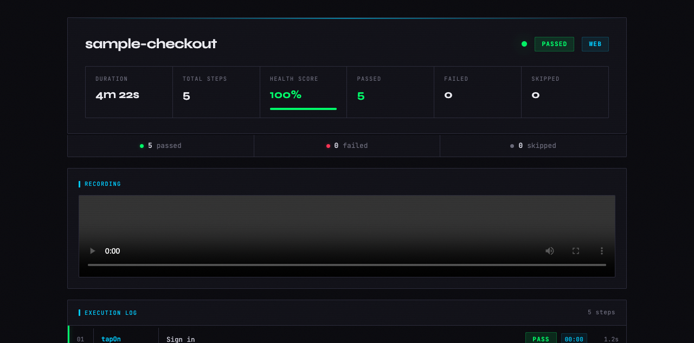
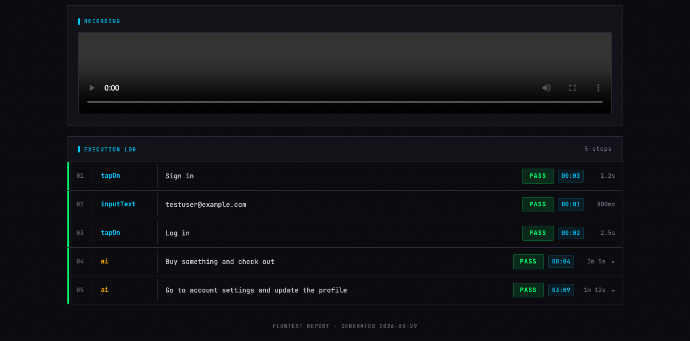
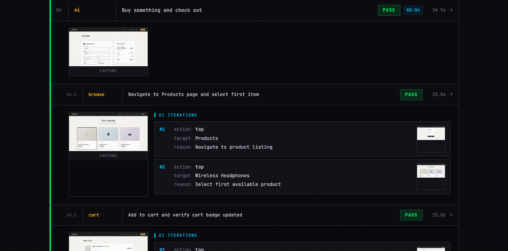
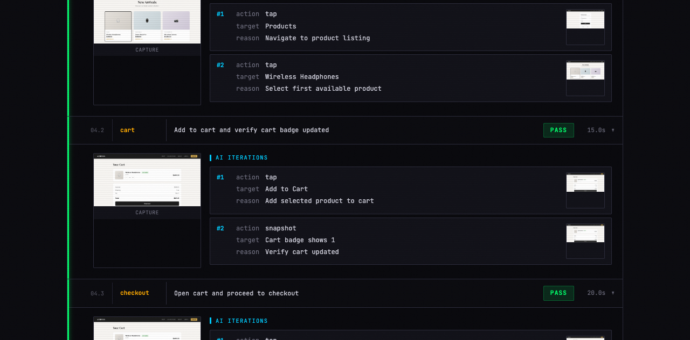

Write YAML.
Test anything.
AI-powered cross-platform test runner for web, Android, and iOS. Declarative steps for predictable actions. AI steps for dynamic flows. Beautiful reports.
flow: checkout platform: web # override with --platform web|android|ios app: https://demo-store.example.com bundle_android: com.example.demo bundle_ios: com.example.demo steps: - tapOn: "Sign in" - inputText: "testuser@example.com" - tapOn: "Log in" - wait: 2000 - assertVisible: "Dashboard" - ai: goal: "Buy the first product and complete checkout" max_steps: 30 # safety limit — caps actions Claude can take - verify: checks: - "Order confirmation page is shown" - "Order number is displayed" - "Success animation plays"
Write declarative steps for the predictable parts. Let Claude handle the dynamic parts. Get a detailed report with screenshots and video.
Write a YAML flow
Declarative steps like tapOn, inputText, assertVisible execute instantly with no AI reasoning. Add ai: steps where the UI is dynamic — Claude drives those with full context from prior steps.
Refine with /refine
Optionally run /refine on your flow. Claude asks clarifying questions about vague AI goals and transforms them into detailed, actionable instructions that produce consistent results.
Run and review
Execute with /flowtest and open the generated HTML report. Every step includes a screenshot, AI sub-steps expand to show individual actions, and web runs include video recording.
Not a toy. A practical tool for testing real apps across platforms.
Declarative + AI
Predictable steps run instantly. Dynamic sections are driven by Claude with full app context. Best of both worlds.
HTML reports
Self-contained viewer with health score, step timeline, expandable AI sub-steps, screenshots, and video.
Cross-platform
Same YAML syntax works across web, Android, and iOS. Platform conditionals handle the differences.
Env variables
Reference $TEST_EMAIL and $TEST_PASSWORD in your flows. Mask sensitive values in reports.
/refine workflow
Interactive assistant that asks clarifying questions and transforms vague AI goals into detailed, consistent instructions.
No extra billing
Uses the Claude CLI you already have. No API keys to configure, no separate billing, no TypeScript to maintain.
AI-evaluated checks
Write plain-language verify: checks. The agent evaluates UI state, animations, and logic using its own judgment — no selectors needed.
Write plain-language checks. The agent takes a screenshot, inspects the DOM, and uses its AI judgment to evaluate each one — passing or failing with a reason.
steps: # ... complete the checkout ... - ai: goal: "Add item to cart and complete checkout" max_steps: 20 # safety limit — caps actions Claude can take # Then verify outcomes - verify: checks: - "Order confirmation page is shown" - "Order number is displayed" - "Success animation plays" - "Total price matches cart amount"
UI checks
Element visibility, text content, layout state, error messages
Animation checks
CSS transitions, canvas activity, motion classes, loading states
Logic checks
Computed values, counters, conditional UI, form state, totals
Write once, test everywhere. Each platform has its own driver under the hood.
Web
Chrome via CDP. Video recording, console logs, full DOM access. Flutter web works out of the box — no config needed.
agent-browserAndroid
Android device or emulator via UI Automator. Works with any app — native, React Native, Flutter.
adbiOS
iPhone or simulator via Facebook IDB. Native accessibility tree for reliable element targeting. Works with native and Flutter apps.
idbEvery run generates a self-contained HTML report. No server needed — just open the file.




Clone, copy, done. No build step, no dependencies beyond what you already have.
Then use /flowtest and /refine in Claude Code. Pass --platform web|android|ios to override — defaults to web if omitted.
Build and install your Flutter app first, then run your flow as normal.
What is FlowTest?
FlowTest is an open-source AI-powered UI test runner that uses YAML files to define test flows. Declarative steps like tapOn and assertVisible run instantly. ai: steps hand control to Claude, which uses accumulated context from all prior steps to navigate toward a goal. Every run produces a self-contained HTML report with screenshots and video.
How does FlowTest use Claude AI for testing?
Claude drives dynamic test steps where traditional selectors would fail. It interprets screenshots and UI state from all prior steps to decide what to tap, type, or scroll — enabling intent-based, self-healing automation without brittle XPath or CSS selectors.
Is FlowTest free and open source?
Yes. FlowTest is fully open source under the MIT license — free for personal and commercial use. Source code and examples are on GitHub.
What platforms does FlowTest support?
FlowTest supports web (Chrome via agent-browser), Android (via adb and UI Automator), and iOS (via Facebook IDB). A single YAML file can target all three platforms using when: conditionals.
How do I install FlowTest?
Clone the repo and copy the skill folder into Claude Code's skills directory — no build step, no dependencies beyond Claude Code and the platform driver. See the Install section for exact commands.
What is the verify: step?
The verify: step lets you write plain-language checks the agent evaluates using its AI judgment — screenshot analysis, DOM inspection, and visual reasoning. Works for UI checks (element visibility, text), animation checks (CSS transitions, canvas activity), and logic checks (computed values, totals, form state).
Does FlowTest work with Flutter apps?
Yes — FlowTest works with Flutter on all three platforms. For web, run flutter run -d web-server --web-port 54545 and point your flow at http://localhost:54545. For Android, build a debug APK with flutter build apk --debug and install it via adb install -r build/app/outputs/flutter-apk/app-debug.apk. For iOS simulator, build with flutter build ios --debug --simulator and install via idb install build/ios/iphonesimulator/Runner.app. Then run your flow as normal with /flowtest.
What plugins does FlowTest include?
FlowTest ships with two plugins: /flowtest — the main runner that executes flow YAML files and produces HTML reports; and /refine — an interactive assistant that asks clarifying questions and transforms vague ai: goals into detailed, consistent instructions. Both are installed together by copying the skill folder.
Let YAML handle the predictable parts. Let Claude handle the rest.